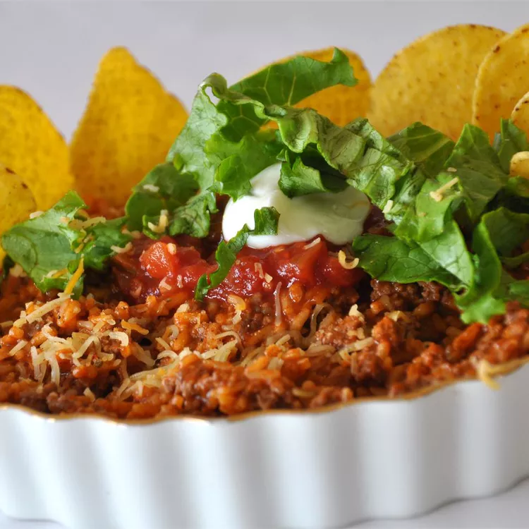

Easy Dinner Nachos

Description
Serve nachos for dinner tonight! Taco-seasoned ground beef is simmered with tomato and rice, then topped with salsa, cheese, and lettuce for a tortilla chip-dipping meal.
Ingredients:
- 1 pound ground beef
- 1 (1.12 ounce) package taco seasoning (such as Pace)
- 1 (10.5 ounce) can condensed tomato soup (such as Campbell's)
- 1 ½ cups water
- 1 ½ cups uncooked instant white rice
- 1/2 cup thick and chunky salsa (such as Pace), or to taste
- 1/2 cup shredded Cheddar cheese, or to taste
- 1 cup shredded lettuce, or to taste
- 4 cups tortilla chips, or to taste
How to make the Easy Dinner Nachos
- Step 1: Cook beef and taco seasoning in a skillet until browned. Pour off fat.
- Step 2: Add condensed soup, water, and rice. Heat to a boil. Cover and cook over low heat until rice is tender, about 5 min.
- Step 3: Top with salsa, Cheddar, and lettuce. Serve with tortilla chips for dipping.
- Step 4: Enjoy
This recipe was directly stolen from Allrecipes.com since I don't have the slightest clue on how to be in a kitchen. Thank you.